無量寺/愛知県蒲郡市
日本有数の珍寺密集地域、三河湾である。
蒲郡市の西部、西浦にある無量寺は西浦不動の名で知られている。
しかしそれ以上によく知られているのが「がん封じ寺」という通称だろう。
ここはがん封じのための絵馬や住職のがん封じ説法などが人気で蒲郡近辺の温泉ツアーついでに観光バスで団体さんがやって来るような雰囲気の寺である。
しかし！！！
それはこの寺の一面であってもう一つの別の顔が存在するのだ。そのもう一つの顔とは・・・
ズバリ！中国西域テイストなのである。
・・・実はこの寺、数年前にも訪れていたのだが、珍寺としてエントリーするのをすっかり忘れてしまっていた。
何故かと云うと、その後に行った大聖寺大秘殿があまりにも強烈だったのでここの記憶が掻き消されてしまっていたのだよ（去年もこんな事を書いたような記憶が・・・）。
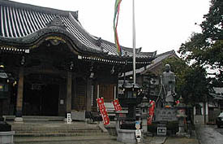
山門を潜り境内に入ると正面に本堂がある。その他左右にはお堂や弘法大師像や滝不動という小さな人工滝などもある。
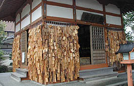
こちらが癌封じ堂。正確な名前は忘れたが外壁全面に大量に下げられた絵馬を見れば癌封じ堂としかいいようがないでしょ。
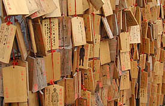 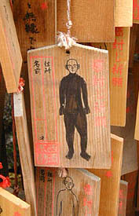
絵馬には人型が印刷されており、悪いところを塗って下さい、という趣向らしい。
中には全身真っ黒に塗りつぶされているものもあり、ググっとディープな雰囲気を醸し出している。
このような絵馬がこのお堂だけでなく境内の左手に延々延々と続いている。
そしてその先にこんな塔が。
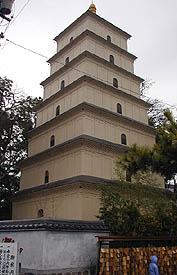
これが「無量寺西域化計画」其一、大雁塔である。
「玄奘三蔵ゆかりの中国西安の仏塔を三分の一に復元す 日本大雁塔（高さは20メートル）」
と、説明版にあるように中国は西安の慈恩寺の大雁塔のレプリカが建っている。
この西安の慈恩寺という寺は玄奘三蔵（つまり三蔵法師ですな）が天竺から持ち帰った経典の翻訳作業を行なった寺として有名で、その経典や仏像を収めるために造られた塔なのだそうだ。だからといって何故こんな愛知の片田舎（失敬）に大雁塔があるのかは良く判らないのだが。
塔は方形7層の（多分）コンクリート造である。
この塔、残念ながら内部には入れない、というか内部に入る扉さえも無い。写真で窓のように見えるところは仏像が置かれている凹みである。
本家の西安の大雁塔は登れるらしいんですけど、ま、いいです。
さて、気を取り直して本堂に向かう。本堂の地下には千仏洞という戒壇巡りがあるという。
早速本堂に上がり込んで内陣左手の入口に向かう。
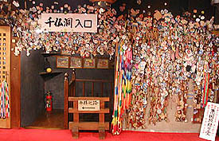
これが入口である。
周りに張り付けられたものはお札か何かと思って良く見てみるとぜ〜んぶ観光ツアーのタグだった。
想像していた以上にバリバリの観光寺のようである。階段を下って角を曲ると・・・
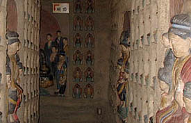
見事な洞窟状の回廊である。薄暗い通路の壁面にはびっしり仏像のレリーフが彫られており、まさに千仏洞。
これぞ「無量寺西域化計画」其ニ、なのである。
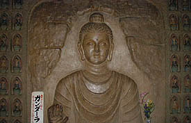 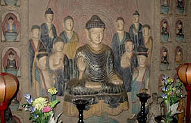
レリーフの芸風は西域風。敦煌の石窟辺りをイメージしているのだろうか。
じつはこのレリーフ、コーティングしてあるのかFRPで造ってあるのか知らないが表面がツルツルなのだ。
だから洞窟寺院特有のざらざらした感じがなく、しかもじゅうたんの上を靴を脱いで歩くと云う実にお手軽な洞窟寺院なのだ。
ニセものっぽいと云ってしまえばそれまでだけど、逆に遊園地の人工の洞窟みたいでこれはこれで私は良いと思います。
NHK「シルクロード」のテーマ曲が心の中でフルボリュームで鳴りっぱなしです・・・
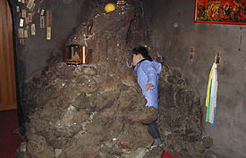
さて、幾つかのS字クランク状の通路を仏像を眺めながら歩いていくと溶岩を張り合わせて造ったミニ胎内潜りのある部屋に出る。
ここれで楽しい千仏洞巡りも終了。
外から見ると極めて普通の本堂の地下にまさかこんな大仕掛けなモノがあるとは思わないので凄く意外＆お得感が強い。しかも無料。
さて、本堂の隣には何とかの絵がどうのこうのという有料施設があったのだがそこは飛ばして本堂の左手にあるミニ八十八カ所霊場をまわる事にした。
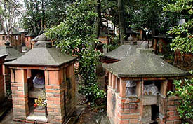
レンガで造られた小さな祠が本堂左の滝不動の辺りからズ〜っと続いているのだ。通路は曲がりくねり本堂の裏手近くまで延びている。
その通路を歩くと、木々の間から幾つもの祠が見え隠れしている。
なんだかとても日本離れした光景だ。かといって中国っぽいとも思えないけど。
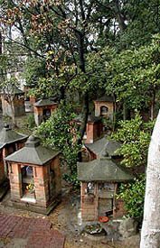
2001.12.
珍寺大道場 HOME